Benchmark
30 tasks
Reason. Execute. Coordinate. Ten tasks in each of Mind, Act and Mind2Act, each at Easy, Medium and Hard.
Mind
What must the robot remember or infer before it acts?
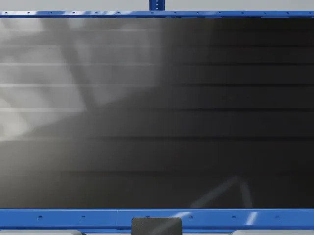
EMindDuplicate Item IdentificationIdentify previously observed items across successive batches and place each repeated item in the submission tray.EMH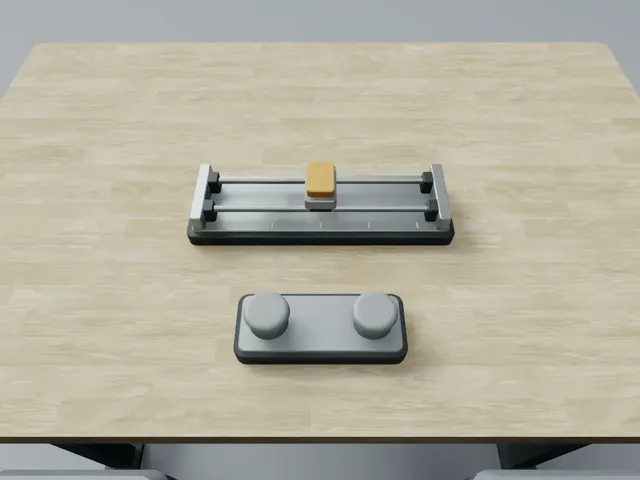
FMindUnknown Button Mapping and Slider NavigationInfer an unknown button-to-motion mapping from feedback, retain it after reset, and navigate to the target.EMH PMindOrder-Based Meal AssemblyRemember initial and additional orders and deliver the requested ingredients to the correct containers.EMH
PMindOrder-Based Meal AssemblyRemember initial and additional orders and deliver the requested ingredients to the correct containers.EMH SMindRotating Tray Layout ReconstructionRemember a colored-slot arrangement and restore it after the tray rotates.EMHMMindWorkpiece Tracking and Route ReproductionTrack a hidden target through cover exchanges and reproduce its required station route.EMHE2MindObject-Code Keypad EntryRemember object–digit associations, decode a visible object sequence, and enter the corresponding code.EMH
SMindRotating Tray Layout ReconstructionRemember a colored-slot arrangement and restore it after the tray rotates.EMHMMindWorkpiece Tracking and Route ReproductionTrack a hidden target through cover exchanges and reproduce its required station route.EMHE2MindObject-Code Keypad EntryRemember object–digit associations, decode a visible object sequence, and enter the corresponding code.EMH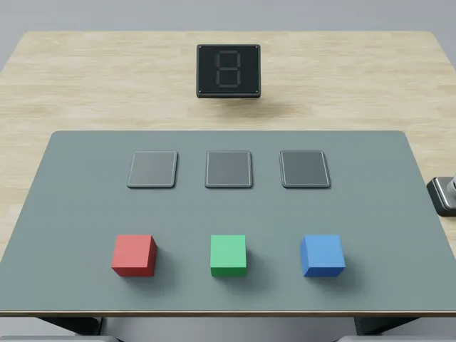
F2MindColor-Block Trial OrderingUse feedback from trial arrangements to determine the required order of colored blocks.EMH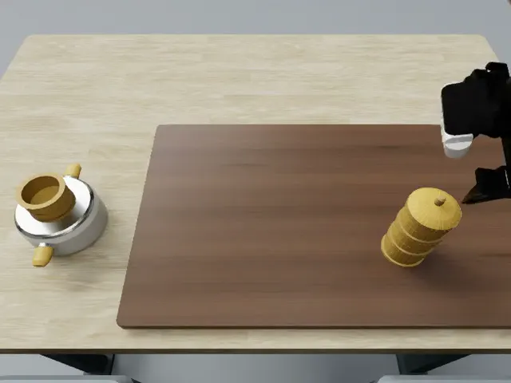
P2MindSteamer Stack Order ReconstructionRemember a stack arrangement and reconstruct the order of the steamer components.EMH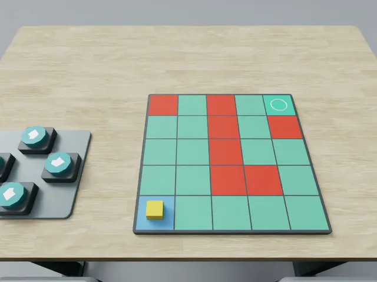
S2MindHidden-Zone NavigationRemember hidden restricted cells and guide a marker across the grid toward the goal.EMH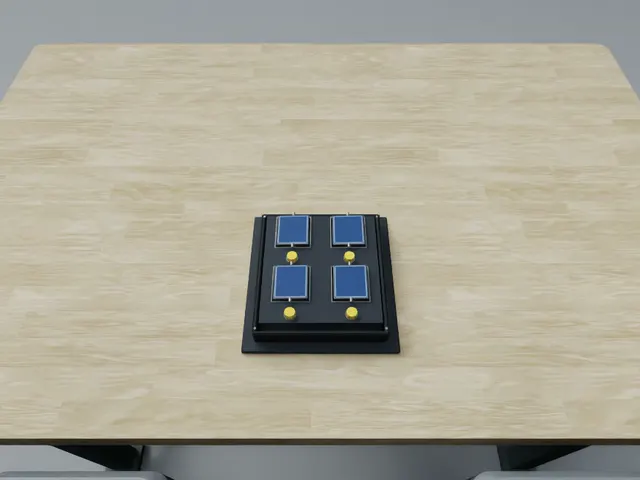
M2MindMemory Card MatchingRemember revealed card identities and locations to find matching pairs.EMHAct
Can the robot turn the intended action into a valid physical outcome?
 FR1ActContinuous Conveyor PickingPick moving packages from a conveyor and place them in the collection tray.EMHFR2ActLight-Guided Button ResponseRespond to illuminated button cues with timely, correct presses and releases.EMH
FR1ActContinuous Conveyor PickingPick moving packages from a conveyor and place them in the collection tray.EMHFR2ActLight-Guided Button ResponseRespond to illuminated button cues with timely, correct presses and releases.EMH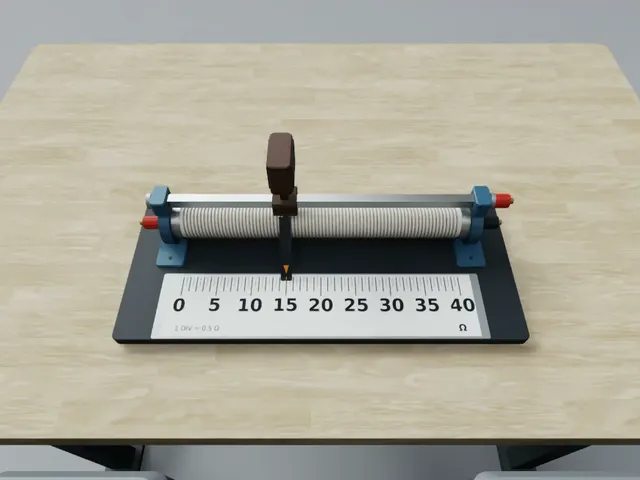
PR1ActLinear Resistor AdjustmentAdjust a linear resistor to the target reading and maintain it after release.EMH PR2ActRotary Voltage Regulator SettingAdjust a rotary voltage regulator to the target reading and maintain it after release.EMH
PR2ActRotary Voltage Regulator SettingAdjust a rotary voltage regulator to the target reading and maintain it after release.EMH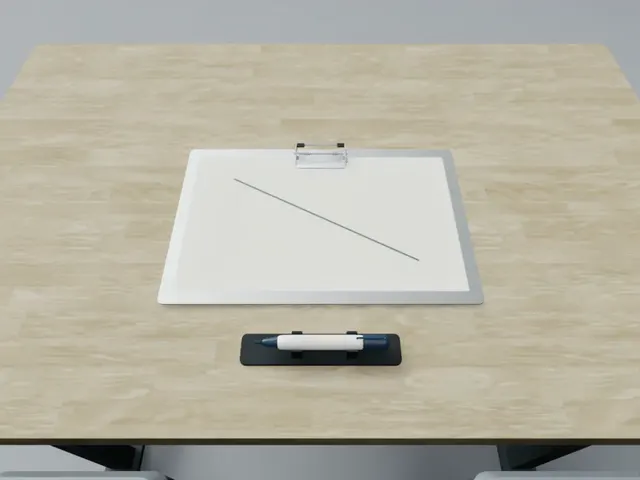
PR3ActMarker Line TracingGrasp a marker and trace a visible path with controlled contact and precision.EMH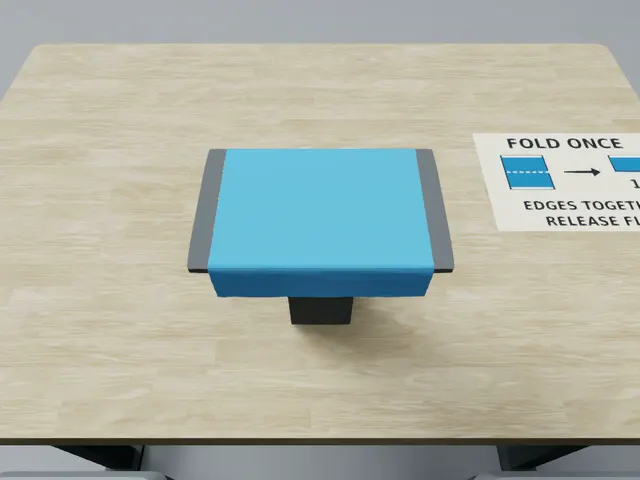
PR4ActCloth Edge Alignment and PlacementFold and align a cloth edge, then release it in a stable placement.EMHPR5ActOriented Stamp PlacementOrient a stamp and press it onto the designated area.EMH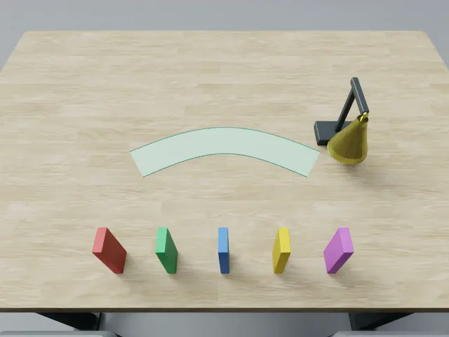
PR6ActDomino Chain Bell RingingArrange dominoes into a chain that carries a falling motion to the bell.EMH DR3ActPeriodic Gate Crossing and WithdrawalTime the arm’s movement through a periodically moving gate and withdraw safely.EMH
DR3ActPeriodic Gate Crossing and WithdrawalTime the arm’s movement through a periodically moving gate and withdraw safely.EMH DR7ActBall-on-Tray Transport and PlacementCarry a tray with a ball while controlling tilt, then place it on the destination surface.EMH
DR7ActBall-on-Tray Transport and PlacementCarry a tray with a ball while controlling tilt, then place it on the destination surface.EMHMind2Act
How does execution feedback change what happens next?
 CP01Mind2ActConveyor Meal AssemblyRemember reference orders and assemble meals from a continuously moving food supply.EMHCP02Mind2ActRotating Cake DecorationRemember a decoration layout and reproduce it on a rotating cake while completing the required stages.EMH
CP01Mind2ActConveyor Meal AssemblyRemember reference orders and assemble meals from a continuously moving food supply.EMHCP02Mind2ActRotating Cake DecorationRemember a decoration layout and reproduce it on a rotating cake while completing the required stages.EMH CP03Mind2ActDynamic Rack LoadingLoad upright plates into moving empty rack slots without disturbing other plates.EMH
CP03Mind2ActDynamic Rack LoadingLoad upright plates into moving empty rack slots without disturbing other plates.EMH CP04Mind2ActDual-Arm CookingRemember a recipe and coordinate preparation, cooking, temperature control, and cleanup.EMH
CP04Mind2ActDual-Arm CookingRemember a recipe and coordinate preparation, cooking, temperature control, and cleanup.EMH CP05Mind2ActKeyboard Sequence ReproductionRemember a demonstrated key sequence, reproduce it with mallets, and return the tools.EMHCP06Mind2ActProduce Weighing and BalancingUse the balance scale’s feedback to select and adjust counterweights for produce.EMH
CP05Mind2ActKeyboard Sequence ReproductionRemember a demonstrated key sequence, reproduce it with mallets, and return the tools.EMHCP06Mind2ActProduce Weighing and BalancingUse the balance scale’s feedback to select and adjust counterweights for produce.EMH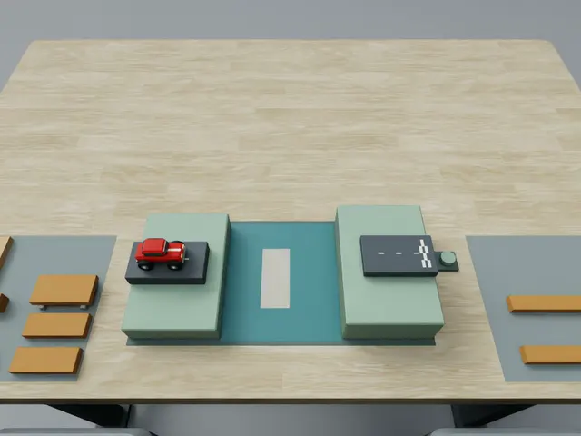
CP07Mind2ActBridge ConstructionConstruct a bridge across a gap using the available building pieces.EMHCP08Mind2ActReference-Guided Block ConstructionRemember a reference structure and reproduce it with the available blocks.EMH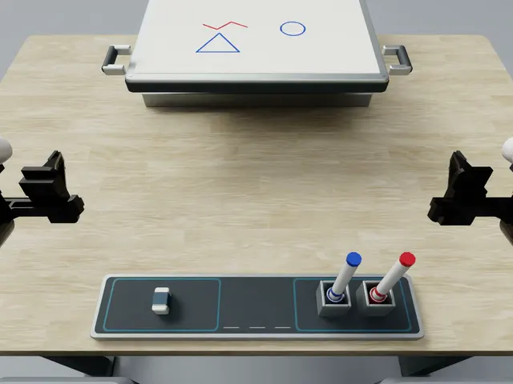
CP09Mind2ActWhiteboard Drawing ReconstructionRecreate a reference drawing on a whiteboard using the available markers.EMH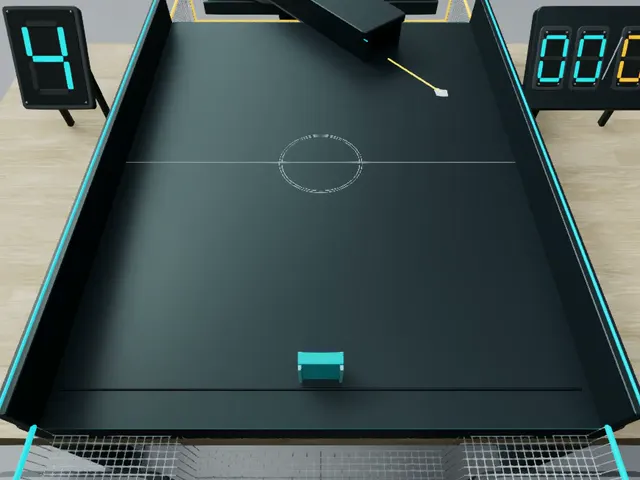
CP10Mind2ActPredictive Ball Return and Red-Ball AvoidancePredict incoming ball motion, return target balls, and avoid red balls.EMHNo task matches. Try another word or clear the search.